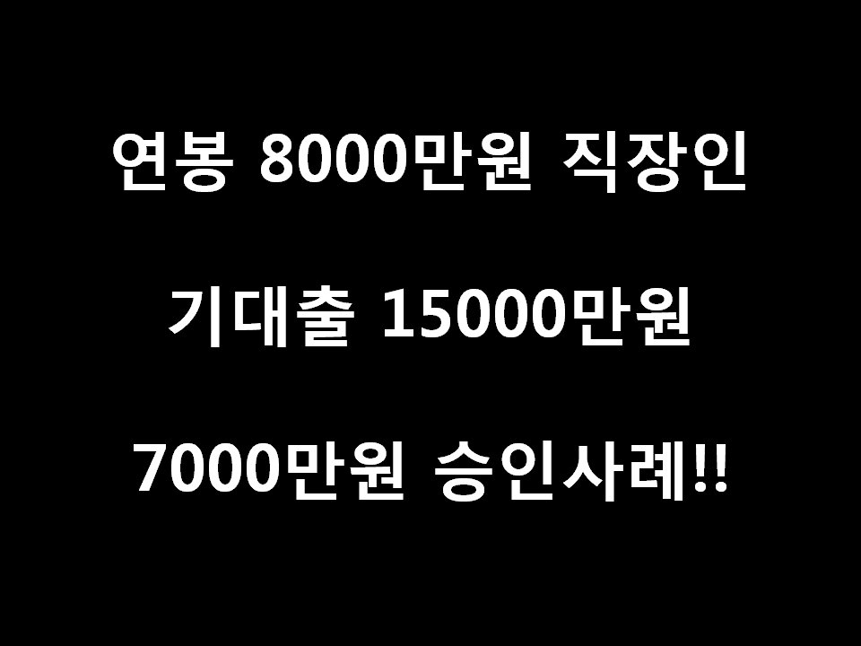
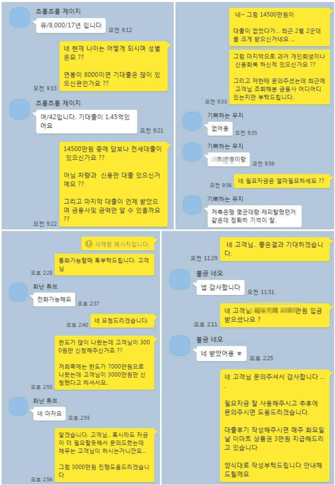

연봉 8000만원 기대출 15000만원 직장인... 7000만원 승인확정 3000만원 승인사례!

안녕하세요 뱅크앤론 회원여러분 김한수 상담사입니다 .
5월 가정의 달을 맞아 오늘은 한도가 많이 나온 고객님 사례를 통해 안내하고자 합니다.
고객님 경우 금융권 종사자에 재직기간 10년이상 연봉8000만원 기대출이 약 15000만원 이신 고객님입니다.
조건은 좋지만 최근 2월달에 기대출을 2곳 15000만원 받으셔서 대출이 필요한상태에 저희 뱅크앤론 통해 문의주셨습니다.
고객님은 타 업체 통해 금융사 조회했지만 부결이 됐습니다. 해본 금융사 제외하고 저의 판단하에 몇군데 조회결과
2군데에서 가한도가 나왔습니다. .. 고객님께서는 금리및 금액 조건을 판단하여 A금융사 3000만원 금리 14% 통해 진행했습니다.
진행심사 하면서 직군상향 심사로 인해 최대 7000만원까지 한도가 나왔습니다.
고객님께서는 대환없이 오로지 신용으로7000만원 승인됐지만 채무를 고려하여 3000만원만 도움드렸습니다.
아래는 저와 고객님 카톡 대화내용입니다.
5월 가정의 달을 맞아 최근 금융사마다 조건이 많이 좋아졌습니다.
저희 뱅크앤론 통해 문의주시면 다양한 상품통해서 대출을 도움드리겠습니다.
감사합니다.

[출처] 연봉 8000만원 기대출 15000만원 직장인... 7000만원 승인확정 3000만원 승인사례! (뱅크앤론 (직장인대출,개인회생자대출,개인회생대출 등..)) | 작성자 뱅크앤론 김한수